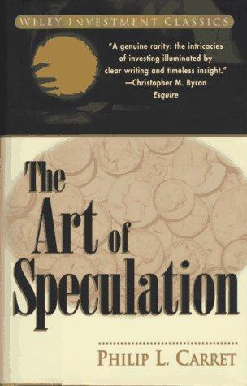

菲利普·卡雷特（Philip L. Carret，1896—1998）在哈佛学习化学，第一次世界大战期间担任飞行员，战后进入债券行业，1922年至1926年为《巴伦周刊》撰稿。1928年，他创办Fidelity Mutual Trust，后来更名为Pioneer Fund，是美国延续时间最长的一批共同基金之一；他管理该基金五十多年。卡雷特先把市场研究写成《巴伦周刊》文章，再于1930年结集为《The Art of Speculation》，全书约三百六十页。Wiley在1997年重印此书，Dover等出版社后来继续发行。中国青年出版社2018年出版葛瑜翻译的简体中文版《穿越周期的专业投机技艺》；市场上也能见到《投机的艺术》等其他译名。卡雷特资产管理公司的历史资料还显示，他1963年另建投资公司，持续工作到高龄，因此本书不是一次牛市经验的临时总结，而是其职业方法的早期版本。
书的章节从“什么是投机”开始，依次处理交易所机制、证券工具、牛熊周期、卖空、资产负债表、利润表、行业分析、未上市证券、期权和套利，最后讨论投机何时转化为投资。卡雷特反对把投机理解成随意下注。他写道，投机需要比一般生意“更广博的知识、更密切的注意和更稳健的判断”（“broader knowledge, closer attention, sounder judgment”）；只要未来存在不确定性，即使购买公认稳健的公司，也不能免除判断错误。书中“埋藏的宝藏”一章寻找账面记录不足的土地、矿权等资产，“金融外科手术”一章则研究重组怎样改变证券权利。文章形成于1920年代繁荣期，结集时1929年崩盘已经发生，这个时间差让规则既带有牛市经验，也接受了真实下跌的检验。与后来依靠单一估值倍数筛选股票的做法不同，他把财务报表、信贷条件、利率、行业供给和市场心理放在一起分析。
末章的“投机者十二诫”把原则落实为组合约束：通常至少持有十种证券并分布在五个行业；除非持续掌握公司情况，单一证券不超过资金的四分之一；每半年重新审视全部持仓；亏损及时处理，盈利仓位不因小幅上涨就自动卖出；“Seek facts diligently, advice never”——勤找事实，不向别人索取结论；把所谓内幕消息当成危险品；不要迷信市盈率或其他机械公式。卡雷特还把杠杆与周期联系起来，认为借款只能在价格低、利率下降和商业低迷时极谨慎地使用。他看重的不只是静态资产价值，还包括公司能否在不大量增加资本的情况下扩张。低价证券如果持续消耗现金，可能只是便宜而非有价值。这些规则彼此并非无冲突：止损可能与长期持有相抵触，固定持仓数量也不能替代对相关性的检查。
Wiley版前言作者维克托·尼德霍夫（Victor Niederhoffer）称书中的研究“as fresh today as newly cut grass”，并说其文字是“24-carat prose”。卡雷特资产管理公司的历史页面则记录了巴菲特对他的评价：“the best long-term investment record of anyone in America”。这些赞语可以说明卡雷特在投资史上的位置，不能证明1930年的每条操作规则都适用于今天。书中的会计制度、交易成本、信息传播速度和行业结构都属于当时环境，财报的可比性和市场监管尤其已经改变。阅读案例时应先分清原始事实、卡雷特当年的推断和今天才能知道的结果。真正耐用的是研究顺序——先理解证券背后的企业和资产，再判断价格、融资条件与持有期限，而不是先给“投资”或“投机”贴上道德标签。